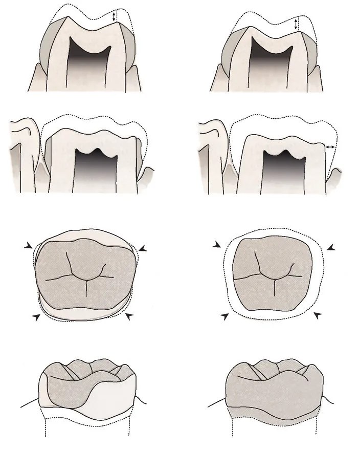

نسخه استخراجشده؛ ترجمه یا تأیید علمی انجام نشده است. وضعیت: captured
روکش استیل وقتی انتخاب میشود که ترمیم مستقیم دوام کافی ندارد. اندیکاسیونهای اصلی:
ضایعهی وسیع چندسطحی در مولر شیری — هرچه سطوح درگیر بیشتر، مرزهای ترمیم بیشتر و شکست زودتر.
پس از درمان پالپ — دندانی که پالپوتومی یا پالپکتومی شده، هم بافت زیادی از دست داده و هم شکنندهتر است.
نقایص تکاملی مانند هیپوپلازی شدید، آملوژنزیس ایمپرفکتا (AI) یا دنتینوژنزیس ایمپرفکتا (DI).
کودک پرریسک با شکستهای مکرر ترمیم.
پایهی فضانگهدار.
منطق مشترک همه: کم کردن تعداد مرزهایی که میتوانند شکست بخورند.
اکلوزال: حدود یک تا یکونیم میلیمتر کاهش، همشکل با آناتومی کاسپها نه بهصورت تخت؛ تراش تخت کاسپها را بیش از حد کوتاه میکند و به شاخهای پالپ زیر آنها نزدیک میشود.
پروگزیمال: با فرز مخروطی، تماس را باز کن تا سوند آزادانه عبور کند. لبه باید پَر شود.
مهمترین نکته — چه چیزی را نگه دار:لبه یا شانهی سرویکال نساز. شانه، روکش را از نشستن کامل بازمیدارد. و برجستگی سرویکال را نتراش — همان برجستگی است که روکش را قفل میکند.
باکال و لینگوال: معمولاً تراش کم یا هیچ. زوایای تیز را گرد کن.

نوع سؤال: ساخت کلمه · 6 خانه
حروف منبع: ن · ی · م · ی · ک · و